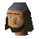
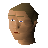
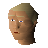
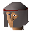
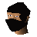
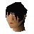
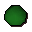
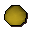

Burthorpe
Town at 2895, 3549 · Kingdom of Asgarnia
Open on the world map → Open in knowledge graph → Below: Burthorpe (underground)
NPCs
| NPC | Level | Spawns | Notable drops |
|---|---|---|---|
| 48 | 3 | ||
 Archer | 42 | 4 | |
| Archer | 42 | 4 | |
| 42 | 1 | ||
| 37 | 2 | ||
| 37 | 1 | ||
 Servant | 5 | 1 | |
| 4 | 1 | ||
 Eohric | 1 | ||
 Harold | 1 | ||
 Sergeant | 1 | ||
| 1 | |||
| 10 | |||
| 1 | |||
| 1 | |||
 Soldier | 1 | ||
| 1 | |||
| shop | 1 |
Ground items
Stone ball x1

Stone ball x1Stone ball x1
Stone ball x1

Stone ball x1